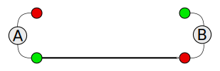
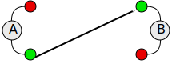
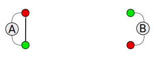
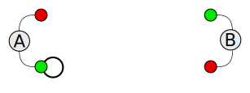

Multi-Siteswap Notation
Just what the world needs, yet another juggling notation.
Siteswap notation uses a list of magnitude of throws to represent the rhythm of a juggling pattern. The magnitude indicates a number of units of time before the object reaches its destination. Throws happen at a rate of one per unit of time by the next hand in the pattern, when all hands in the pattern have thrown, start back with the first hand. This works fine for single juggler where there are only 2 hands and it is easy figure out the destination hand. It also works for multiple jugglers, referred to has Multi-handed Siteswap, but because the magnitude a siteswap is split among the jugglers in the pattern, it requires a fair bit to calculation to determine both the magnitude and direction of each throw. Also the nature of Multi-handed Siteswap patterns are not "normal" passing patterns.
The type of juggling patterns described by Multi-Siteswap Notation (MSN) are patterns where there are multiple jugglers each maintaining their own siteswap synchronized with all others in the pattern. Because throws are made simultaneously in multiple separate sites its destination cannot be calculated therefore it must be given.
In order to fully describe a pattern requires 2 components;
- Layout - Contains the number of jugglers, where each is located, what their orientation is, and possibly movement information
- Rhythm - Contains information about how objects move through hands over time.
Both components are needed to describe a multi-siteswap pattern. However they are independent of the other. The layout provides the physical framework that the rhythm plays out across.
One of the goals of this notation is to make it easy for this pattern to be hand written.
Layout
The layout component defines information about the jugglers, the number, the location of each, and what there orientation is. The way MSN does this is to draw the layout viewed from overhead with each juggler labeled with a capital letter starting with ’A’ and proceeding through the alphabet. The image will show both the relative positions of the jugglers position and their orientation to each other. If the layout changes over the course of the pattern, a drawing for each position in the pattern and arrows indicating the general direction of movement.
The figure we will be using to represent the juggler in layout diagrams on this site is;
Rhythm
Rhythm notation consist of a list of the jugglers, each with a list of throws in the rhythm.
Throw Notation
A throw is describe from the view point of a hand in the pattern. It describes the magnitude and destination hand of the throw relative to the hand that is throwing it. The notation does not define what hand makes the throw. The same assumption that siteswap makes applies to this notation, start with the right hand and alternate hands for each pass from there. However, this can change depending on the destination of the previous throw by another juggler in the pattern. When a throw is in diagonal direction (described below) it may force 2 consecutive throws from the same hand by the juggler receiving the throw, this is known has a Hurry.
Magnitude
The magnitude is the same has for Siteswap;
- 0 = empty hand
- 1 = hand-across
- 2 = hold
- 3 = normal height pass
- 4 = double height pass
- ... and so on
Because a magnitude of 3 is the common case, it can be assumed when writing a rhythm
Destination
The destination is defined relative to the current hand and is only involved with the destination siteswap. In a 2 juggler pattern there are 4 possible directions that a throw can go and each is represented by a single letter as follows ;
- P - Throw to another juggler’s opposite hand (A straight Pass), right-to-left or left-to-right)
 - D - throw to other juggler’s same hand (A Diagonal pass, right-to-right, or left-to-left)
 - S - throw to other hand (a Self throw)
 - H - throw to same hand (a Heff)

For more patterns with more than 2 Jugglers in the pattern, append the letter of the destination juggler.
Putting it together
A rhythm is defined by a list of jugglers and their siteswap throws. The throws are sets of 2 parts, magnitude, destination hand and juggler. For example; The rhythm for the common 4-count passing pattern would look something like;
| A: | 3PB | 3SA | 3SA | 3SA |
|---|---|---|---|---|
| B: | 3PA | 3SB | 3SB | 3SB |
This is a bit verbose. To address this issue we use a number of simplification rules for throws.
- Magnitude only needs to be present if it is not 3
- Juggler name is only needed on a throw when a direction is not enough to give the destination
- If all siteswaps are the same, or only different by destination, then only one siteswap is needed
Using these rules the same 4-count rhythm can be given as;
| P | S | S | S |